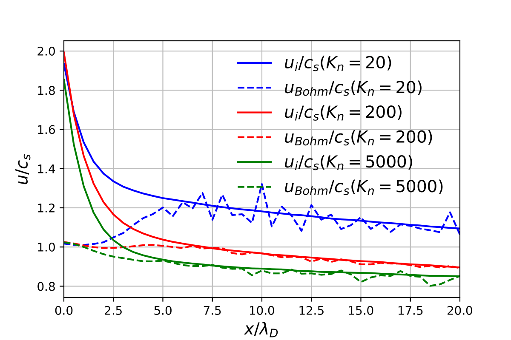

TDS Plasma Sheath Simulations
Highlight by Yuzhi Li (Virginia Tech), Bhuvana Srinivasan (Virginia Tech), Yanzeng Zhang (LANL) and Xian-Zhu Tang (LANL)
Bohm Criterion of Plasma Sheaths away from Asymptotic Limits
Overview
The plasma exit flow speed at the sheath entrance is constrained by the Bohm criterion. The so-called Bohm speed regulates the plasma particle and power exhaust fluxes to the wall, and it is commonly deployed as a boundary condition to exclude the sheath region in quasi-neutral plasma modeling. Traditionally, evaluation of Bohm speed from the Bohm criterion are performed in the asymptotic limit and invokes drastic simplification of plasma transport. Here, we drive an expression for the Bohm speed from a set of anisotropic plasma transport equations. The thermal force, temperature isotropization and heat flux enter into the evaluation of the Bohm speed. Comparison with kinetic simulations demonstrates its accuracy over the plasma-sheath transition region in which quasineutrality is weakly perturbed and Bohm criterion applies.
Result
Steady-state presheath and sheath profile: (a) densities of electrons and ions normalized by the initial density $n_0$; (b) plasma potential normalized by the ratio of initial electron temperature to the electric charge $T_{e0}/e$; (c) temperatures of electron and ion in x (normal to the wall) and y (tangential to the wall) direction, normalized by the initial temperature $T_0$; (d) ion flow velocity normalized by the adiabatic sound speed.
 Ion exit flow speed from simulation data and Bohm speed calculated from the model normalized by the adiabatic sound speed over distance from wall for Kn = 20, 200, 5000 with Kn the Knudsen number defined as the ratio between plasma mean-free-path and the Debye length. This model can predict the Bohm speed accurately over a broad range of plasma collisionality in the sheath transition region.
Effect of Wall Recycling and Neutrals on Plasma Sheaths and Presheaths
Overview
The divertor high recycling regime is characterized by the dissipation of power and particle flux from the mid-plane to the wall, where atomic processes such as impurity radiation, recombination, and ion-neutral friction are rich. The plasma-sheath transition governs the particle and power transport and can be significantly affected by the atomic processes, making it deviate from the classical sheath model. A first principle kinetic code VPIC with the atomic collision package is used to investigate a 1D self-consistent slab plasma, where a strong hydrogen recirculation loop exists. The influence of the atomic collisions on the particle/power transport and the plasma sheath profile is discussed.
Result
Steady-state presheath and sheath profile with a recycling wall boundary condition (a) densities of electrons and ions normalized by the initial density $n_0$; (b) plasma potential; (c) temperatures of electron and ion in x (normal to the wall) and y (tangential to the wall) direction, normalized by the initial temperature $T_0$; (d) ion flow velocity normalized by the adiabatic sound speed.